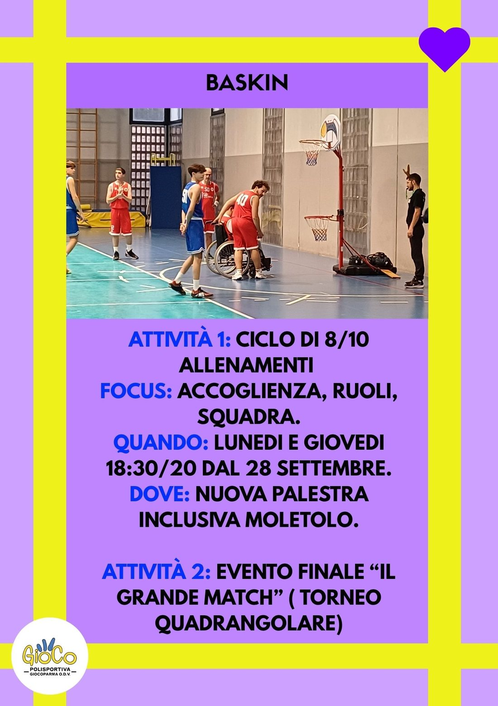
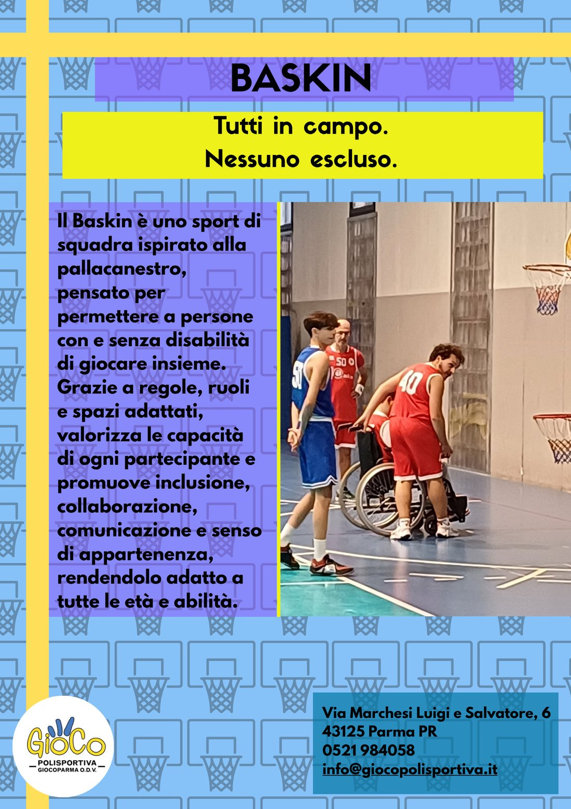
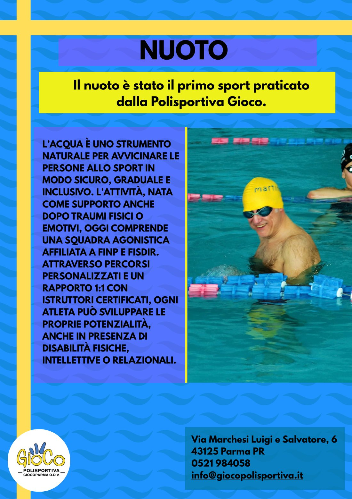
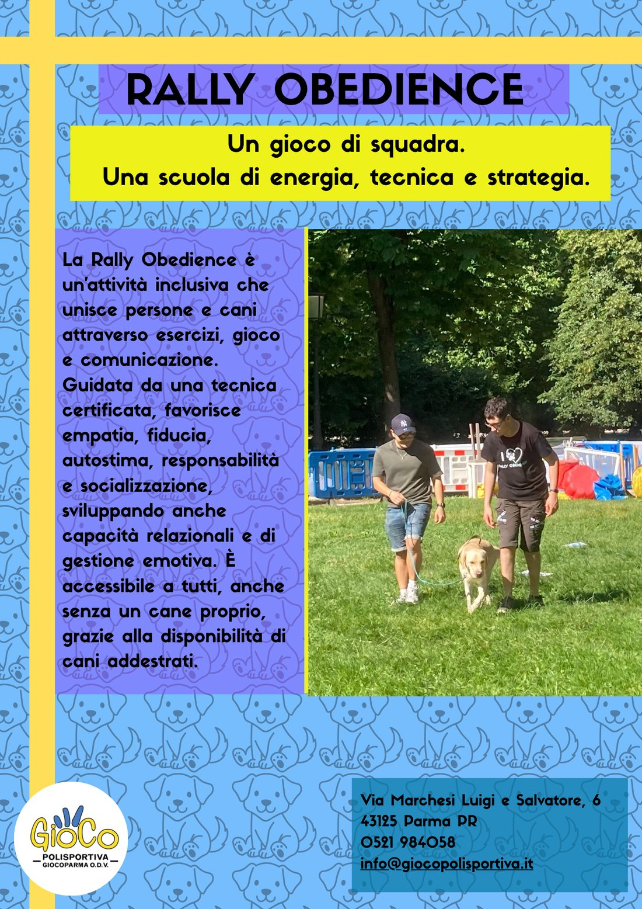
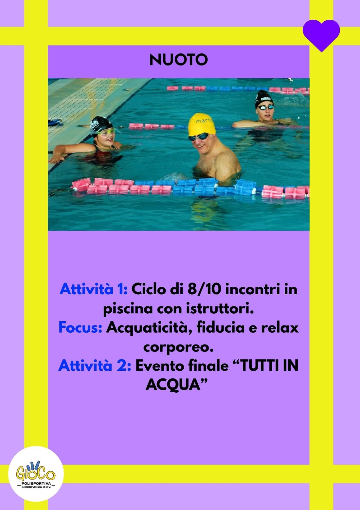
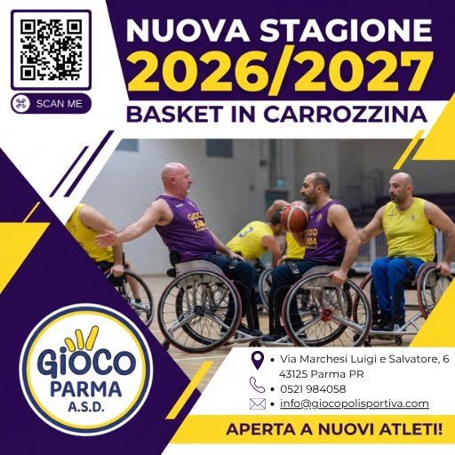

Volantino
Il volantino sul Baskin.
Il lavoro a cui tengo di più. Nel Baskin giocano nella stessa squadra ragazzi con e senza disabilità, e il volantino doveva farlo capire a colpo d'occhio: "Tutti in campo. Nessuno escluso."

Portfolio PCTO, classe 5A
Grafica per lo sport inclusivo.
Tre settimane alla Polisportiva Gioco Parma.



Per tre settimane ho fatto grafica per la Polisportiva Gioco Parma, dove persone con e senza disabilità fanno sport insieme. Volantini, post e loghi, tutti fatti con Canva.
Quello che ho fatto durante lo stage.
Volantino
Il lavoro a cui tengo di più. Nel Baskin giocano nella stessa squadra ragazzi con e senza disabilità, e il volantino doveva farlo capire a colpo d'occhio: "Tutti in campo. Nessuno escluso."

Serie
Per ogni sport due volantini: uno che lo presenta e uno con il programma. Stessa cornice gialla e viola su tutti, così si capisce subito che vengono dalla stessa polisportiva.

Social
Un post quadrato per lanciare la stagione 2026/2027 e trovare nuovi atleti. Il QR porta dritto alle informazioni.

Gli sport che ho raccontato con i miei volantini. In tutti giocano insieme persone con e senza disabilità.
01
Tutti in campo. Nessuno escluso.
Uno sport di squadra ispirato alla pallacanestro. Regole, ruoli e spazi sono adattati perché persone con e senza disabilità possano giocare nella stessa squadra.
02
Nuova stagione 2026/2027.
La squadra di Gioco Parma riparte ed è aperta a nuovi atleti. Per questo ho fatto un post per i social, con un QR code per arrivare subito ai contatti.
03
Il primo sport della polisportiva.
L'acqua avvicina allo sport in modo sicuro e graduale. Con percorsi personalizzati e istruttori certificati ognuno può crescere, anche con una disabilità fisica, intellettiva o relazionale. C'è anche una squadra agonistica affiliata a FINP e FISDIR.
04
Un gioco di squadra, a sei zampe.
Persone e cani lavorano in coppia tra esercizi, gioco e comunicazione. Aiuta fiducia, autostima e socializzazione, ed è aperta a tutti: chi non ha un cane può usare quelli addestrati della polisportiva.
Le tre cose da controllare prima di mandare un file in tipografia.
Lo sfondo esce oltre il taglio, così la lama non lascia bordi bianchi.
Testi e loghi stanno dentro la linea tratteggiata, lontani dal taglio.
Sotto questa risoluzione le immagini stampate escono sgranate.
Mi sono trovato bene a lavorare alla Polisportiva Gioco Parma. Ho trovato una bella compagnia e un ambiente in cui è stato facile mettersi al lavoro.
Era la prima volta che facevo grafica per qualcuno che poi l'avrebbe usata davvero. Stare con persone simpatiche mi ha fatto lavorare più tranquillo.
3
settimane di stage
4
sport inclusivi
4
volantini e post